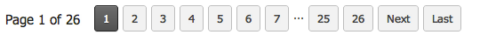
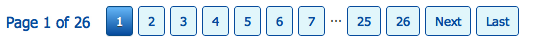
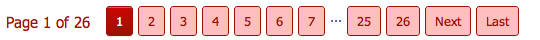

This quick start guide is intended to be a brief overview of the capabilities of the paginator short code plugin. For a more detailed example with downloadable data and broader use cases goto our our online guide
The paginator short code is intended to be used with any table in your wordpress database, but in the interest of getting up and running we have created a shortcode example that should work with most wordpress databases. Just copy and paste the example below into a page or post and publish it. For this example to work you must add the wp_posts table to the permitted table options and the save options.
- pagesize - Size of the page that will be shown, if 100 records were returned and the page size was 20 then 5 pages would be shown.
- table - Table that will be queried, and whose fields will be returned. Any table you would like to paginate must be included in the permitted tables option.
- fields - Comma deliminated list of fields that will be queried. Only fields in this list can be shown in the page.
- filter - Ampersand (&) delimited list of conjuctive filters (all conditions must be met) with operators. Supported operators are = (equals), > (greater than), and < (less than). You can have has many filter conditions as you wish, and they do not need to be the same fields as the query. They must support the type annotations (see filters section below).
- odd - Text that will be substituted in an odd number row. Use this to toggle styles or classes per row.
- even - Text that will be substituted in an even number row. Use this to toggle styles or classes per row.
- order_by - The sort field(s) and order of the results. Fields should be comma delimited and the order is ASC (ascending) or DESC (descending). If neither is specified, the default is ASC.
Filtering provides fine grain control of what results will be returned and paged. We have created a way to simply specify all the filter criteria you would like to make with one statement in the filter field of the tag. All criteria must be met for a result to be returned. Sorry, OR operators are not supported yet. Each criteria is separated by an & (Ampersand) and has the following structure:
| Field Name | Operator | Type Value |
|---|---|---|
| post_date | > | @2011-12-03 |
Operators
Operators determine how the filter will select rows, will it need to be equal, less than or greater than the value specified for a result to be displayed. Supported operator types are:
- = (equals) - Return a result if the value for the specified field equals the value provided
- > (greater than) - Return a result if the value for the specified field is greater than the value provided
- < (less than) - Return a result if the value for the specified field is less than the value provided
Type Value Types
To know how to filter the results the plugin needs to know what type of field is being used to make the comparison, we provide three supported field types for filtering:
- empty (text type) - Text types dont require any prefix, that's because thats the most common filter. This would be used to filter on a text status for example post_status=published
- # (number) - If your filter is testing on a number value just prefix the number with the # sign for example ID>#10
- @ (date) - When testing against TIMESTAMP or DATETIME types use the @ prefix. This is helpful for only showing time relevant results such as past_date>@2012-02-13
The area inside of the two shortcode tags is used as a template for substituting values per row result. Any HTML inside will replace field names annotated with %field_name% and replace it with the value for that field for each row. There is also the concept of Row Toggling, wherever in the template that the %ROW_TOGGLE% annotation is made, the odd and even field values will get supstituted. With both field substitution and field toggle the the template:
Would get translated to for a specific result record:Five themes are provided in the package for the pagination controls. There is currently no way to create custom themes unless you go into one of the existing themes and change it. This requires write access to the plugin directory.
| default |  |
| sky |  |
| froggy | |
| santa fe |  |
| cherry |  |
As a protection, only the tables that are explicitly permitted to be paginated can be used in pagination shortcodes. Make sure that you have entered all the tables you would like to be allowed to paginate with the exact table name and comma delimited for example place, wp_posts